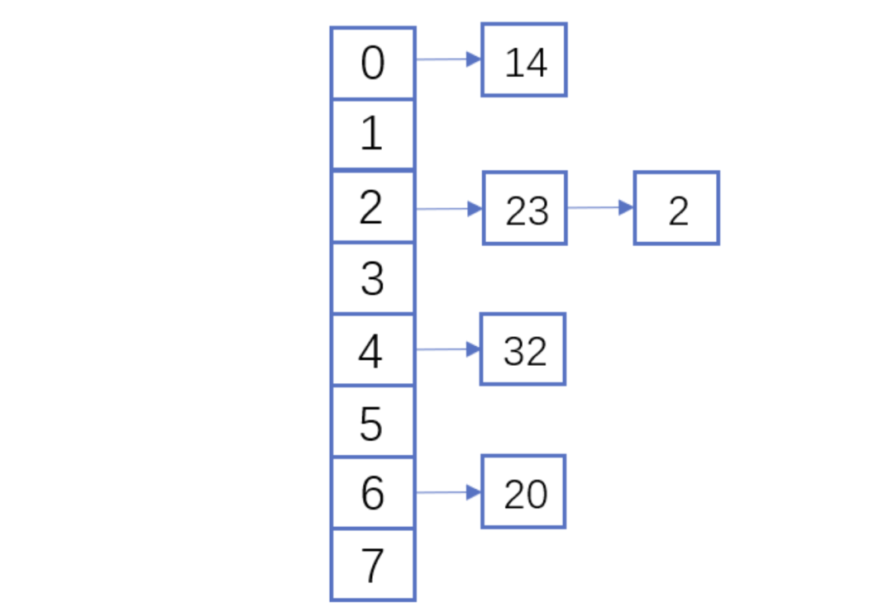

由一个"Bug"引发的对Swift中Hashable，Equatable原理的探究
最近的工作中遇到了一个奇怪的问题，先贴上在Stack Overflow的提问，当是阐述问题了。
链接在此
简单来说就是当我将一个结构体Conform了Equatable协议后，在insert到Set中的时候，每次运行代码，表现是不一致的，有时候集合中会有两个结构体，有时候它会触发==函数，且发现是”相同“的结构体，集合里只有一个。
这给让我很疑惑，所以我决定弄明白其中的原理。
什么是Hash
hash这个单词的意思就是混杂，在计算机术语中译作散列。
Hash，一般翻译做散列、杂凑，或音译为哈希，是把任意长度的输入（又叫做预映射pre-image）通过散列算法变换成固定长度的输出，该输出就是散列值。这种转换是一种压缩映射，也就是，散列值的空间通常远小于输入的空间，不同的输入可能会散列成相同的输出，所以不可能从散列值来确定唯一的输入值。简单的说就是一种将任意长度的消息压缩到某一固定长度的消息摘要的函数。
一个好的Hash算法，有两个特点：
抗碰撞能力：对于任意两个不同的数据块，其hash值相同的可能性极小；对于一个给定的数据块，找到和它hash值相同的数据块极为困难。
抗篡改能力：对于一个数据块，哪怕只改动其一个比特位，其hash值的改动也会非常大。
本文不对Hash算法做过多的深入研究(深入了我也不懂)
Hash的应用非常的广泛，其中和我们接触最多的就是密码学和数据结构中的应用。
密码学中的应用：
MD5 SHA等 都是Hash算法。大部分公司在存用户密码的时候都会使用MD5+Salt，但其实通过上文对Hash的解释，其实可以发现，不同的输入 Hash其实是可能一致的，这就是可能会导致一个问题就是比如一个用户A密码是123456，另一个人B它去尝试破译A的密码，他暴力破解，有2中可能破解，一种是他蒙对了密码，还有一种可能是他没有蒙对密码但是他瞎试的密码Hash后的Value和123456 Hash后的Value一致，这种情况会不会让大家觉得非常不安全，其实大可不必有这种焦虑。
以MD5为例，其输出长度为128位，设计预期碰撞概率为（2的64次方分之1），这是一个极小极小的数字——而即便是在MD5被王小云教授破解之后，其碰撞概率上限也高达（2的41次方分之1）。这里就涉及到了一个概率学的问题，意思就是其实根本就没有绝对的安全，即便你设计出了一个完美的Hash函数，它没有碰撞，那别人也有直接蒙对你密码的可能，同样这个概率也是非常小的。所以只要这个Hash算法它的碰撞几率非常小，我们就可以认为它是相对安全的。并且现在大部分公司的登录，验证逻辑都不仅仅依赖单纯的算法，比如每天最多输入三次，它会有业务逻辑上阻碍你的破解。
在数据结构中的应用：
首先我们来看字典这个数据结构。
它的实现就利用hash。首先将key做hash，会得到一个value，将一个value映射为实际的内存地址，然后将key和value存到对应的内存地址中，我们可以看出这种做法和数组对比，有一个很大的优点就是通过给定值进行查找的时候时间复杂度是O(1),而数组的话时间复杂度就是O(n)，数组在通过给定值查找的时候需要通过指针偏移，遍历整个数组。说完了优点，我们再来看看它的问题，字典这种做法的有一个缺点，就是不同的key可能hash后的value值是相同的（这个原因上文在Hash的定义中已经解释过），解决这个问题一般是通过两种方式，一种是链地址法，一种是开放地址法。
链地址法：
链表地址法是使用一个链表数组，来存储相应数据，当hash遇到冲突的时候依次添加到链表的后面进行处理。
链地址在处理的流程如下：添加一个元素的时候，首先计算元素key的hash值，确定插入数组中的位置。如果当前位置下没有重复数据，则直接添加到当前位置。当遇到冲突的时候，添加到同一个hash值的元素后面，行成一个链表。这个链表的特点是同一个链表上的Hash值相同。开放地址法：
开放地址法是指大小为 M 的数组保存 N 个键值对，其中 M > N。我们需要依靠数组中的空位解决碰撞冲突。基于这种策略的所有方法被统称为“开放地址”哈希表。线性探测法，就是比较常用的一种“开放地址”哈希表的一种实现方式。线性探测法的核心思想是当冲突发生时，顺序查看表中下一单元，直到找出一个空单元或查遍全表。简单来说就是：一旦发生冲突，就去寻找下 一个空的散列表地址，只要散列表足够大，空的散列地址总能找到。假设散列长为8，散列函数H(K)=K mod 7，给定的关键字序列为{32,14,23,2, 20}当使用链表法时，相应
的数据结构如下图所示：

当使用线性探测法时，相应的数据结果如下图所示：
这里的两种算法的区别是2这个元素，在链表法中还是在节点2的位置上，但是在线性探测法遇到冲突时会将冲突数据放到下一个空的位置下面。


可以看出，如果你的Hash算法抗碰撞能力较弱，那么就会有很多的链表，会让你的时间复杂度提高。
Hash在Swift Set中的应用
Swift中的集合应用了和字典很相似的技术，它的存储的数据是无序的，且不重复的，也是利用了hashValue去映射到相应的内存地址去储存数据。也会有碰撞需要处理。
最后让我们来解释一下，为什么会出现我遇到的那个问题。
我们来模拟一次那遇到的那个问题，首先我向集合中insert了一个chain，集合会求出一个hashvalue，比如是1，那会将它存在0X00000001（假设）的位置，然后我insert了另一个chain，求出的hashvalue是2，那将它存在0X00000010的位置，这就是第一种情况，集合里有2个chain。在看第二种，首先我向集合中insert了一个chain，集合会求出一个hashvalue，比如是1，那会将它存在0X00000001（假设）的位置，然后我insert了另一个chain，求出的hashvalue还是1，这时候出现了碰撞，这时候就集合就需要知道这个位置已经有元素了，那当前要插入的元素和已经存在的元素是否相同，如果相同，那就直接忽略，什么都不做，如果不同，那就需要用开放地址法（swift中对hash碰撞用的是开放地址法）将其插入到下一个空闲的地址中去。这时候它会调用Equatable协议中的==函数，按照我上边的实现方式，这两个chain就是相同的，所以在此种情况下，集合里只会有一个元素。说到这里其实最初的问题已经解决了，但是还有一处细节需要解释一下，其实上文中我的截图，可以看出来每次求出的hashValue并不一样，但还是会触发==，原因是实际情况下我们求的hashValue都是很长的一段数字，并不能直接当做内存地址来使用，还是需要一个算法去映射，这一个映射其实算出重复内存地址的几率就非常大了，因为初始化申请的内存地址其实不是很大，所以即便没有出现碰撞还是有可能触发==函数的。
这篇博客快要写完的时候，我在 Apple Forum上的提问也得到了回答，链接在这里：
https://developer.apple.com/forums/thread/657600